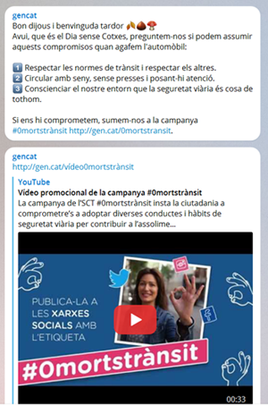
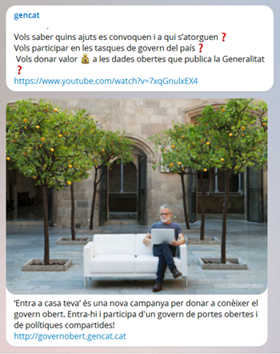

Canal Telegram
Els canals de Telegram permeten trametre missatges a un nombre il·limitat de subscriptors. Hi ha canals públics i canals privats. Els públics tenen un àlies, és a dir, un nom que permet a qualsevol persona buscar-los al cercador i unir-s'hi sense haver de conèixer cap número de telèfon. El canal de gencat és un canal públic. Els ciutadans que s'hi vulguin subscriure poden fer-ho a través de l'àlies del canal (en aquest cas @gencat) o bé a través d'una adreça web, per exemple http://telegram.me/gencat
Gestió del canal
El creador d'un canal té la capacitat de difondre els missatges, que també pot editar i eliminar (les modificacions s'aplicaran a tots els usuaris), així com de gestionar-ne els membres: pot afegir els primers 200, expulsar-los i també afegir o eliminar els administradors que poden gestionar-lo. En relació amb la configuració del canal, també se'n pot editar l'àlies, la imatge del perfil i l'enllaç. Els administradors tenen drets limitats: poden difondre missatges, treure els seus propis missatges o treure qualsevol membre.
Els missatges apareixen signats amb el nom que té el mateix canal, no amb el de l'administrador. De fet, hi pot haver diversos administradors però la signatura sempre és la mateixa. Quan escrius en un canal, el missatge es publica amb el nom del canal i la seva foto, no amb les teves dades.
Es poden editar i fer correccions dels continguts durant 24 hores encara que ja s'hagin enviat i, fins i tot, es poden esborrar missatges si convé millorar-los.
Quin tipus de continguts s'ofereixen?
Al canal gencat de Telegram es publica informació de servei generalista, és a dir, d'interès ciutadà i multidisciplinari. S'escullen continguts que provenen de tots els departaments de la Generalitat tenint en compte que siguin d'alt valor per a la ciutadania. Alguns exemples de continguts que es publiquen són: posada en marxa de nous serveis i equipaments, beques i ajuts, notícies destacades del web gencat, concursos, comunicació de terminis o dates clau, etc. També esdevé una eina per fer-se ressò de campanyes de prevenció i conscienciació que posa en marxa la Generalitat en matèries com la salut, el medi ambient, el trànsit, o les tecnologies, entre d'altres.

Un altre dels eixos en l’editorialització de continguts del canal és facilitar la participació activa de la ciutadania en la millora de les polítiques i serveis públics. Així, la presa de decisions que afecten la gestió pública es veu enriquida per la visió dels ciutadans mateixos, tant a títol individual com a títol col•lectiu.

En casos puntuals, en què l'interès per al conjunt de la ciutadania estigui justificat, s'utilitza com a canal de suport a les accions comunicatives que s'emeten des d'altres perfils i canals corporatius de la Generalitat de Catalunya, per exemple, en el cas dels incendis forestals.
D'altra banda, el divendres s'envia un missatge amb les propostes del cap de setmana a partir dels continguts elaborats per al web gencat http://gen.cat/cap-de-setmana/
Editorialització de continguts
Els missatges que s'emeten des del canal es publiquen habitualment en català tot i que ocasionalment els continguts de suport (vídeos, imatges) es poden publicar en un altre idioma.
Els missatges han de ser senzills, curts i visuals, adaptats al context d'ús. Convé evitar l'ús de fórmules pròpies d'un registre molt col·loquial, sense emfasitzar, ni escriure amb majúscules. És clau que el missatge sigui clar i atractiu, fent ús de recursos lingüístics, acompanyant-los d'imatges i, aprofitant la galeria que ofereix Telegram, incorporant emoticones que afegeixen un to desenfadat que connecta amb la part més emocional. Les emoticones actuen com a complement del text però no el substitueixen.
Es recomana incloure enllaços si aquests aporten valor afegit al missatge. S'han d'escurçar mitjançant l'aplicació bit.ly, que permet comptabilitzar la mètrica del perfil de manera fàcil i àgil. Es prioritzarà que els enllaços apuntin a webs en format responsiu.
Telegram permet adjuntar als missatges fotografies, vídeos o qualsevol tipus d'arxiu de fins a 1,5 GB. Per adjuntar-los, només cal seleccionar la icona del clip i publicar l'arxiu corresponent. Les imatges seleccionades no poden ser de:
- Menors sense el consentiment dels seus pares o tutors
- Contingut ofensiu
- Poca qualitat
- Moviment continuat (gifs animats)
- Format flash. Aquest format no es veu en els dispositius mòbils
El llançament de missatges es planifica tenint en compte l'actualitat i sempre procurant que s'hi ofereixin continguts de servei. Es treballa amb una graella a una setmana vista. En aquesta planificació hi participen les persones que gestionen el canal.
Les fonts d'informació per a l'elaboració dels missatges provenen de l'entorn corporatiu gencat (notícies, notes de premsa, butlletins, blogs, webs especials) però també de l'escolta activa de les xarxes socials. D'altra banda, internament també es fa periòdicament difusió del canal entre els diversos departaments i unitats perquè puguin suggerir continguts de publicació, que es recullen a la bústia redacciogencat@gencat.cat.
Les persones responsables de la gestió del canal són les encarregades de validar i publicar els continguts si ho troben adient.
També es treballa amb un arxiu de continguts atemporals, que es revisa setmanalment, per publicar quan el ritme de l'actualitat baixa.
Periodicitat de publicació
Cada dia s'emet un sol missatge, normalment al voltant de les nou del matí. Circumstàncies lligades a l'actualitat o l'oportunitat provoquen que se'n pugui enviar algun altre en diferents franges horàries. Per exemple, les propostes del cap de setmana que s'envien el divendres com a segon missatge en un nivell jeràrquic inferior que la informació més lligada a l'actualitat que es pugui enviar a primera hora del matí.
Per a una presència òptima hi ha d'haver activitat de manera continuada sense fer-ne un ús abusiu. Evidentment, en casos d'emergències, està justificat publicar missatges en intervals temporals més ajustats.
Tipologia de missatges
Estil peu de foto. Té un límit de caràcters. Si el peu només conté text està limitat a 200 caràcters. Cal adjuntar la imatge amb el botó 'Photo'. Si es volen posar icones, s'ha de copiar el text amb les icones inserides prèviament. Els enllaços es poden clicar, però no es mostra la previsualització de la imatge del web.
Estil text, que pot contenir diversos enllaços. No té límit de caràcters. L'enllaç principal, de referència, cal que aparegui el primer perquè es mostri la previsualització de la imatge del web a sota del bloc del text. Els altres enllaços es podran clicar, però no se'n visualitzaran les imatges. Si es fan salts de línia, els enllaços inclouran la visualització a sobre del bloc de text. També s'hi poden afegir les icones. Aquest recurs es pot utilitzar quan s'envien missatges, per exemple, sobre tràmits, en què la imatge és secundària.
Estil imatge o arxiu (d'àudio o vídeo). Pot acompanyar a un missatge d'estil text. Cal adjuntar la imatge o l'arxiu amb el botó 'File'. Si està justificat es pot invertir l'ordre i enviar primer la imatge.